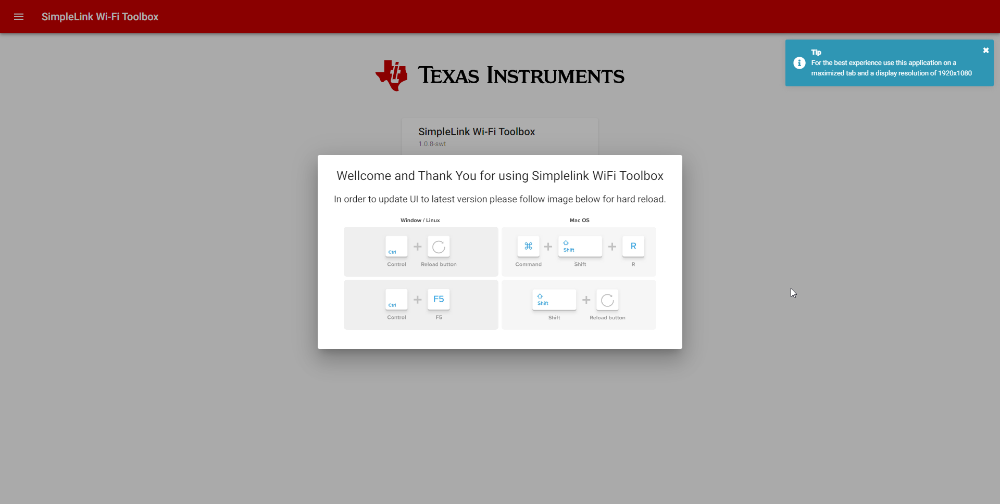

SimpleLink Wi-Fi Toolbox Startup Guide¶
Overview¶
SimpleLink Wi-Fi Toolbox is a cross-platform software kit, that provides all required tools for fast and easy ramp-up of the CC33XX and CC35XX family of devices. SimpleLink Wi-Fi Toolbox provides as visual control as a command line control of the device.
Prerequisites¶
- Windows 10 64Bit
- Ubuntu 20 (or higher) 64 bit
- Latest Chrome Web Browser
SimpleLink Wi-Fi Toolbox Installation¶
Windows¶
Double click on the installer file and follow the setup steps.
Note
It is recommended not to change “Installation Directory” from the default of c:\ti\simplelink_wifi_toolbox_x.x.x
Ubuntu¶
In some cases, execution permission for the Ubuntu installer is required to be added to the installer. To add such permission open the terminal in the installer file location and type:
chmod +x simplelink_wifi_toolbox_x_x_x.run
Execute the installer and follow the setup steps
./simplelink_wifi_toolbox_x_x_x.run
Note
It is recommended not to change “Installation Directory” from the default of /home/${USER}/ti/simplelink_wifi_toolbox_x.x.x
Run SimpleLink Wi-Fi Toolbox¶
Windows¶
Open Windows File Explorer at c:\ti\simplelink_wifi_toolbox_x.x.x and double click on simplelink_wifi_toolbox_x_x_x.exe. The terminal will be opened and a couple of seconds after Chrome will be opened on URL http://127.0.0.1:7777.
Note
If Chrome isn’t the default browser on your PC we recommend closing opened default browser, opening Chrome, and typing http://127.0.0.1:7777 in the URL.
Ubuntu¶
Open Terminal and navigate into the SimpleLink Wi-Fi Toolbox installation folder
cd /home/${USER}/ti/simplelink_wifi_toolbox_x.x.x
Execute SimpleLink Wi-Fi Toolbox
./simplelink-wifi-toolbox
After a couple of seconds, the Chrome web browser should open on http://127.0.0.1:7777 in the URL.
Note
If Chrome isn’t the default browser on your PC we recommend closing opened default browser, opening Chrome, and typing http://127.0.0.1:7777 in the URL.
SimpleLink Wi-Fi Toolbox Intro¶
The intro page of the toolbox displays all available tools for the current version.
For the first time / each new version, a user should get a force to reload message. To continue user should hit the key combination depending on OS / Web Browser. This step will insure that users align to the latest update of the SimpleLink Wi-Fi Toolbox interface (refer to Figure 1).
{kind=link}

Figure 1 SimpleLink Wi-Fi Toolbox hard Reload
After hitting the key combination for force reloading, a user should see the intro page of the SimpleLink Wi-Fi Toolbox (refer to Figure 2).

Figure 2 SimpleLink Wi-Fi Toolbox intro page